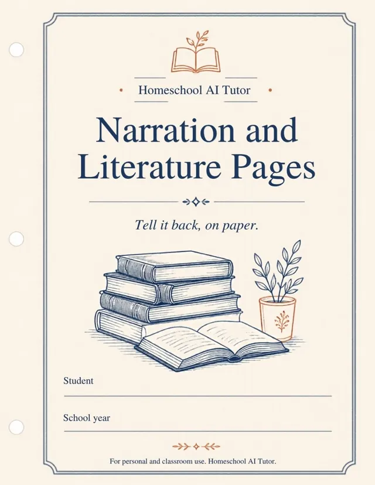
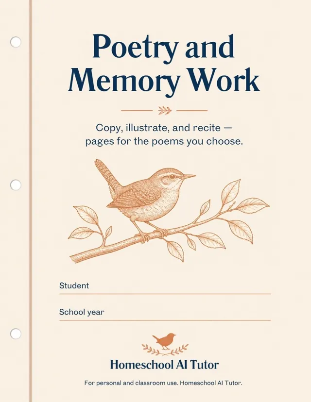
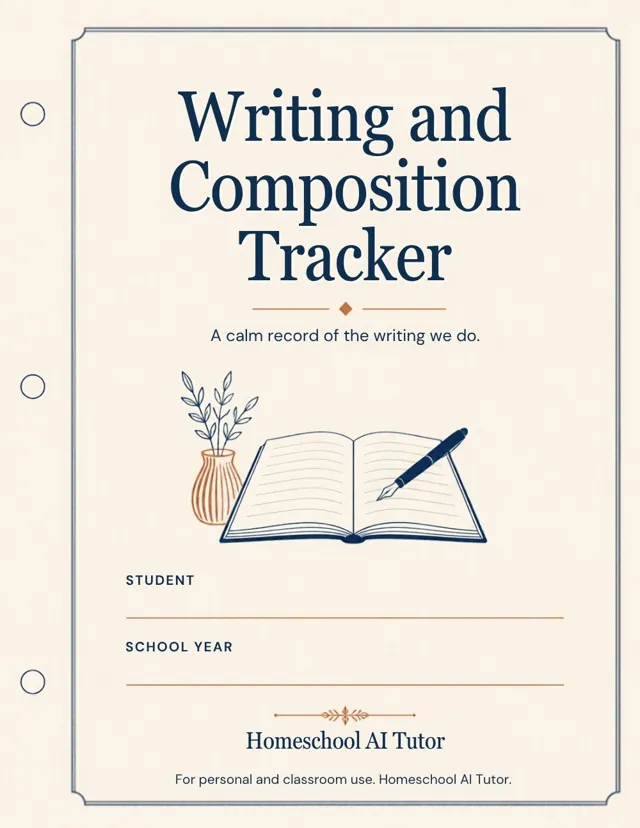
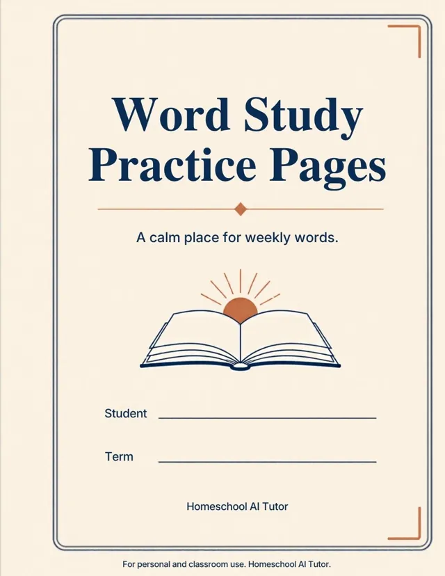
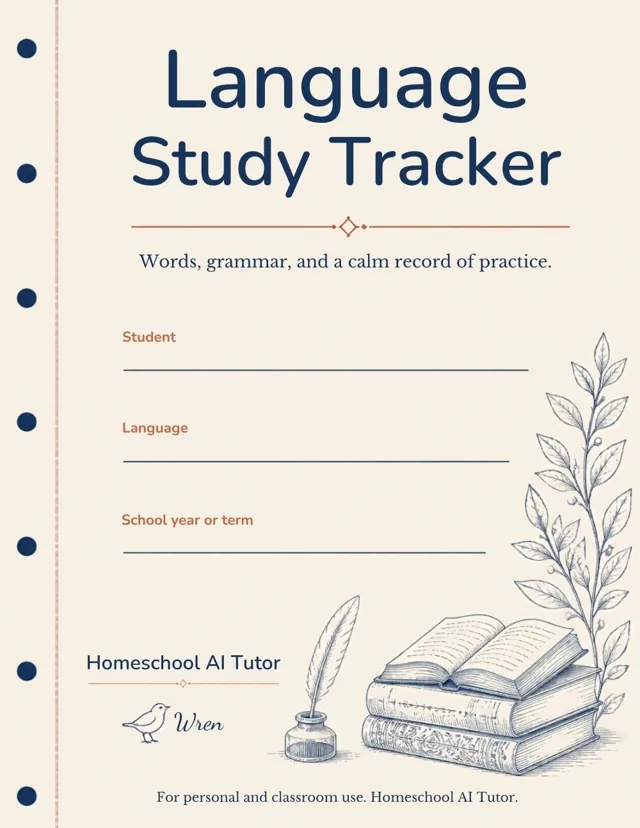
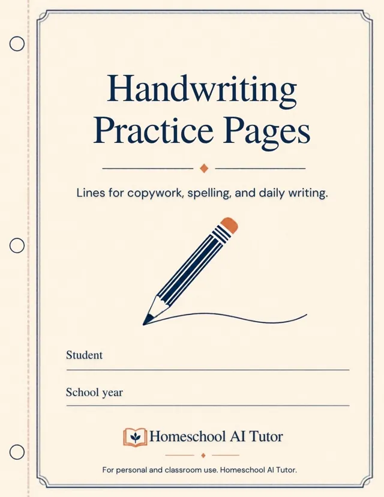

Homeschool printables
40 print-at-home PDF kits for planning, record keeping, nature study, copywork and the seasons. US Letter, empty write-in fields, sold on Etsy as instant downloads.
PlanningRecords and portfoliosLanguage artsMathNature and scienceHistory and geographyMusic and artSeasonal
Planning 7 kits
Plan the year, the term, the week and the morning.
Records and portfolios 7 kits
Attendance, hours, transcripts and the binder.

Language arts 8 kits
Copywork, narration, reading logs and word study.
Reading Tracker and Book Log

Winter Copywork and Handwriting Pack

Narration and Literature Pages

Poetry and Memory Work

Writing and Composition Tracker

Word Study Practice Pages

Language Study Tracker

Handwriting Practice Pages Kit
Math 1 kit
Fact fluency and practice tracking.
Nature and science 5 kits
Nature journals, lab sheets and unit studies.
History and geography 4 kits
Timelines, unit studies and map work.

Music and art 3 kits
Practice logs, picture study and composer study.
Seasonal 5 kits
Winter, the holidays and the countdown to spring.